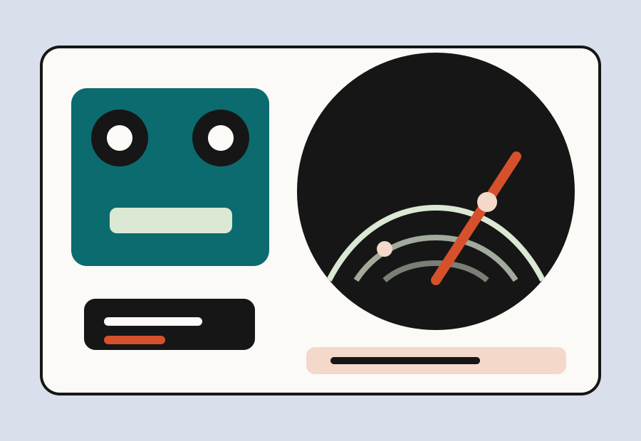

Project Case Study
Ultrasonic radar system with live object detection.
This project is an Arduino-based embedded system that scans its surroundings using an ultrasonic sensor mounted on a sweeping servo motor. It gives real-time feedback through LEDs, an LCD display, a buzzer, and a custom PC radar visualization built in Processing. I coded the main embedded radar system in C with some C++, which controlled the sensor timing, servo movement, hardware outputs, and serial data stream.

Overview
What this project does.
The system uses an HC-SR04 ultrasonic sensor to detect nearby objects while an SG90 servo motor sweeps the sensor across an arc. The Arduino measures distance, updates hardware feedback, and streams angle-distance data to a computer.
The most important part of my work was coding the embedded system logic in C/C++ on the Arduino. That code connects the hardware pieces together: it reads the ultrasonic sensor, moves the servo, controls the LEDs and buzzer, updates the LCD, and sends structured data to the radar visualization.
On the computer side, a Processing sketch reads the serial data and renders a live half-circle radar display with a sweep beam, distance rings, angle markers, and object dots that briefly persist before fading out.
How It Works
Sensor data becomes a live radar display.
- The servo motor sweeps the ultrasonic sensor back and forth across about 170 degrees.
- At each angle, the Arduino sends a pulse and measures how long the echo takes to return.
- The Arduino converts the echo timing into distance in centimeters.
- LEDs, the buzzer, and the LCD update based on whether the object is far, medium, or close.
- The angle and distance are streamed to Processing for the live radar visualization.
Components
Hardware and software used.
Files
Code and documentation.
The main project code is the Arduino sketch, which I wrote mostly in C with some C++. It controls the sensor, servo, LEDs, buzzer, and LCD while sending clean angle-distance data over serial. The Processing sketch reads that serial data from the Arduino and draws the live radar interface on the computer.
Reflection
What I learned.
This project helped me practice embedded systems programming: reading sensor data with precise pulse timing, controlling a servo motor, building multi-output logic, and sending structured data between two independent programs.
I also debugged real hardware and software issues, including wiring shorts, component polarity, serial port conflicts, and logic errors. Future improvements could include a second sensor, wider scan coverage, or logging detection data for later analysis.